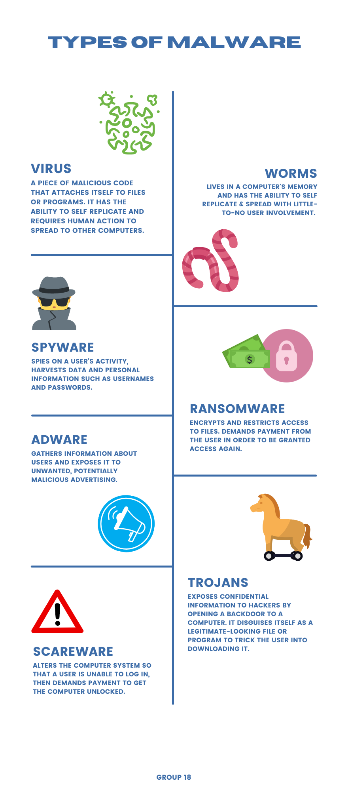

Introduction
Malware is short for ’malicious software’. It is used as an umbrella term for describing any program that performs malicious activities. It comes in a wide range of forms and different classifications such as viruses, trojans, worms, spyware, botnets, ransomware, adware, and many more. Malware is most often seen in media and news, where many victims have reported that their programs were attacked by criminals who take advantage of malware to steal and misused their personal data and critical information for their gains. It's essential to understand how malware took its first strides into the world and how it has evolved so that we can protect ourselves and our personal data from it. This website was created to help educate the general public about malware and some of its notable moments in history. We cover the types of malware that exist, its history to understand how it started, and how it has evolved into modern malware that is more sophisticated and advanced.
Types of Malwares
Malware comes in many different forms with its own malicious purposes and it requires certain methods to eliminate them. There are 7 common types of malware that we need to be aware of in case we encounter them at some point. These are: viruses, worms, trojans, ransomware, spyware, adware, and scareware. Here is a short description of each of these malwares.
Viruses
Viruses are a type of malware that automatically attaches itself to programs or files and lies dormant until circumstances causes the computer or device to execute its code. This is what makes viruses hard to detect and eliminate. Computer viruses generally require a host program and are capable of self-replicating rapidly.To avoid being infected with a computer virus, it’s important to be cautious when browsing the web, and opening links or files from websites that are not trustworthy. The best method to remove a virus is by using a trusted antivirus software to run a virus scan so that the virus can be eliminated by quarantining or deleting the infected files.
Worms
The distinctive trait of computer worms is that it can self-replicate with little-to-no user involvement and does not need a host program to exist. Computer worms are capable of duplicating itself to spread to uninfected computers in a network and it's primary purpose is to make copies of itself over and over again until eventually depleting a system's resources, which causes a shared network to be overloaded. Worms are often times disguised as message attachments in emails and can infect an entire company if even one person in the shared network opens the malicious email. To protect computers from being exploited by worms, one should keep up to date with the lastest versions of a computer's operating systems (OS) and exercise caution when opening unsolicited email attachments. Using antivirus software and firewalls is also recommended.
Trojans
A Trojan horse is a type of malware that is disguised as a legitimate program or software. Trojans can be hidden within seemingly innocuous or desirable programs and they must be executed by a user for it to work. Unlike computer viruses or worms, a Trojan does not self-replicate and it can't manifest by itself. Once activated, a trojan enables cybercriminals to spy on users, steal sensitive data, and gain backdoor access to systems. The most popular type of Trojan is the fake antivirus program that pops up through emails or websites and claims you're infected, then instructs you to run a program to clean your PC. Unfortunately, users are not aware of this and get tricked into running the program which results in their PCs being overtaken by malicious Trojans. The most effective way to protect your computer against trojan horses would be to use a combination of comprehensive antivirus software and avoid downloading or installing programs from untrustworthy sources.
Ransomware
Ransomware is a type of malware that restricts users from access to resources until the user pays a ransom to regain access. It is a growing threat in the world of cybersecurity, generating billions of dollars in payments to cybercriminals and causing significant damage to businesses and governmental organizations. It uses asymmetric encryption to encrypt a user’s data so that they cannot access the affected files, databases, or applications. The public-private pair of keys is uniquely generated by the attacker and the attacker demands a ransom to be paid for the private key to be made available to the victim. Attackers generally ask for payment in anonymous cryptocurrency, such as Bitcoin, which makes it difficult to follow the money trail and track them down.To avoid ransomware and mitigate damage if attacked, people should get in the habit of making regular backups of their data and especially have a good offline backup of all of their critical files. Just as for other malware, it is recommended to use security software and keep it up to date to avoid falling victim to ransomware attacks.
Adware
The term 'Adware' is used to describe a form of malware that bombards users with unwanted advertisements. Often times, adwares gather information about users and exposes them to unwanted, potentially malicious advertising. The best way to counteract adware is to use an Ad Blocker on your browser.
Spyware
Spyware is a malware designed to gain access to computers, often without the knowledge of the user. It aims to track users' internet usage data and capture credit card or bank account information by monitoring their internet activity, tracking their login and password information, and spying on their sensitive information. Cybercriminals use it to log victims' keystrokes and gain access to passwords or intellectual property for their own gain. Spyware can be removed by finding the malicious software and preventing it from being executed by using a protective program with an auto-protection feature. Users should also be mindful about consenting to cookies on websites and install an anti-tracking browser extension.
Scareware
Scareware is a form of malware that uses social engineering to cause fear or uses threats to trick users into paying ransom or buying unwanted software. It commonly appears in the form of pop-ups and tricks users into believing their computer is infected with a virus, then suggests that they download and pay for fake antivirus software to remove it. However, the fake antivirus software is actually malware intended to steal the victim's personal data. Falling for these scams releases the victim's credit card information and opens the door for identity theft crimes. To stop scareware from working, users should always be skeptical of sudden pop-ups, ads and emails claiming that there’s malware on their computer. In the case of popup ads posing as malware alerts, its best to not click on the ads and turn off the device.
